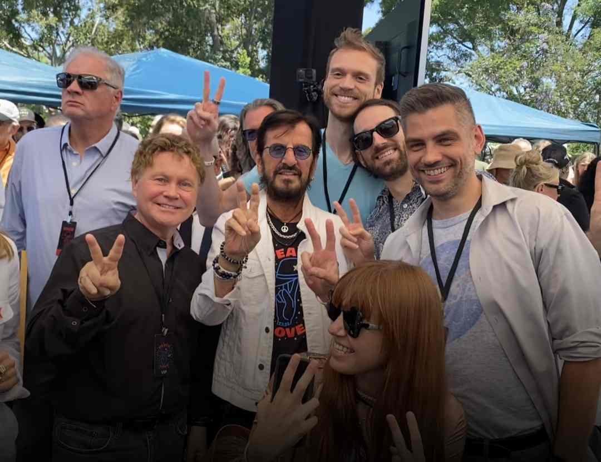
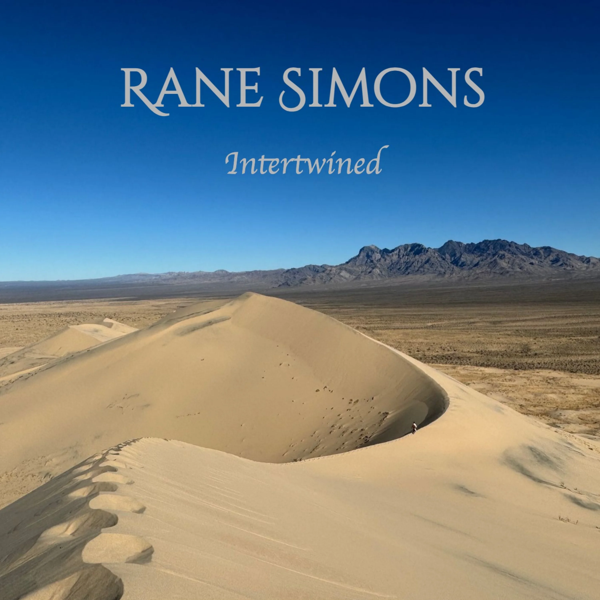
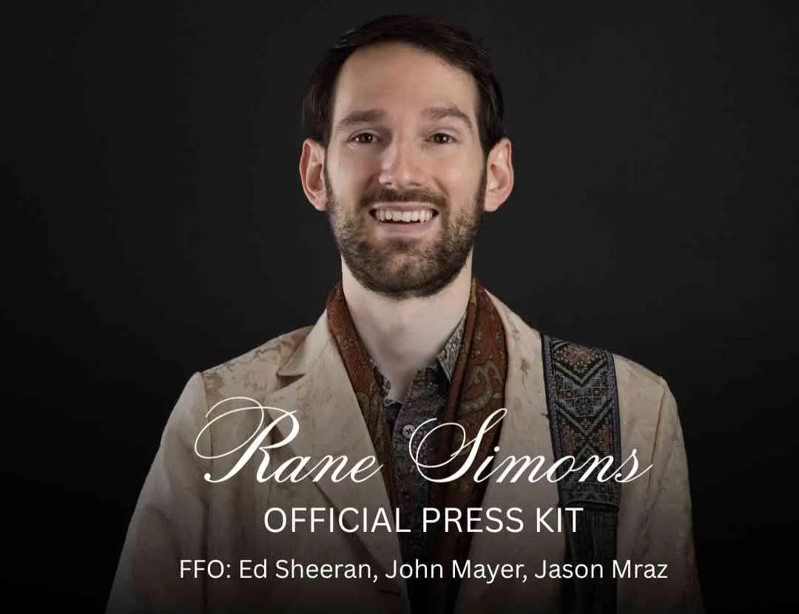
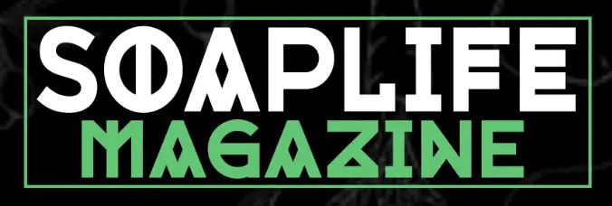

Most Recent Release
Intertwined
First Full Album


Rane Simons is an alt rock singer, songwriter, producer, and multi-instrumentalist whose music is poetically prophetic. Inspired by surviving a brief encounter with a serial killer, he crafts songs that transmute a deep experience of darkness into themes of resilience and being fully alive. Blending elements of indie rock, pop, and R&B, his sound is fluid, immersive, and built to resonate long after the final note.
Based in Austin, Texas, he embraces a deeply DIY approach to his work by remaining involved in nearly every step of the creative process. From songwriting and production to visual direction and release strategy, each project is treated as a complete world rather than a standalone track. This independence allows his music to stay unfiltered and true to his lived experiences, free from trend-chasing or excessive polish.
He got to meet Ringo Starr last summer in Beverly Hills because his original song Knock On Wood was chosen to be beamed up into space along with a song written by Ringo.





"moody, sensual textures while keeping a cool emotional distance"